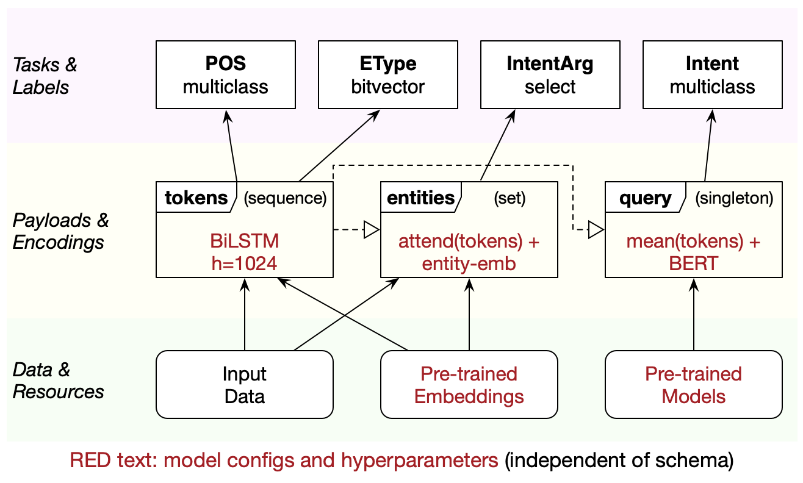
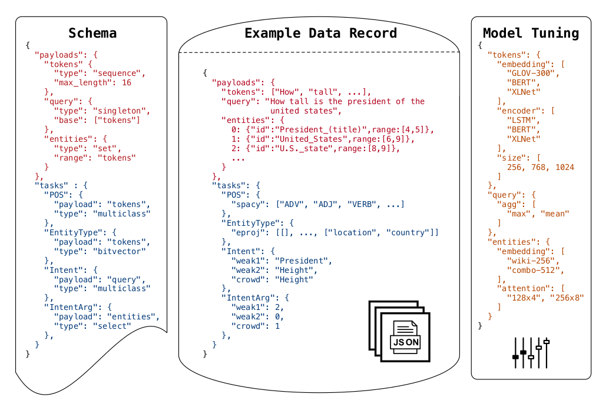
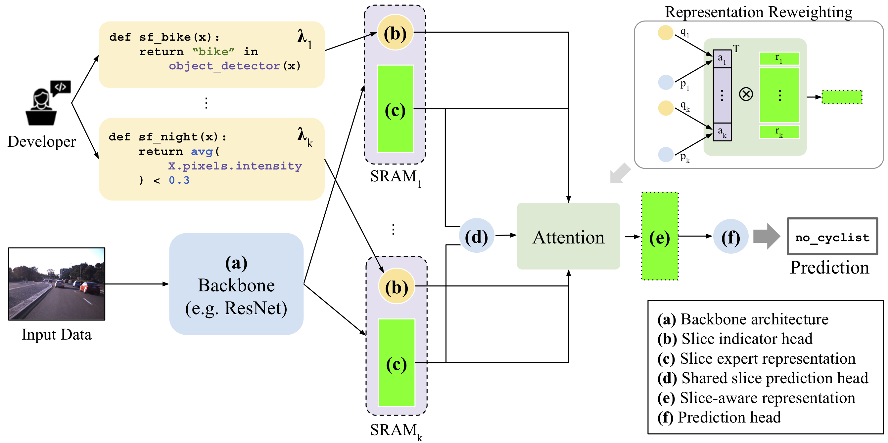
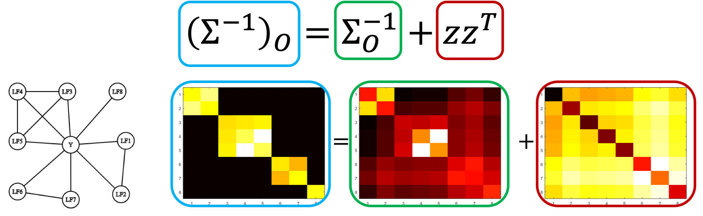

Overton
Le ML goût pomme
NMLM du 7 octobre 2019
Overview
Overview
Quand / Quoi / Où
- Sortie
- Début septembre
- Conf
- NeurIPS
- But
- Gestion du cycle software ML
- Maturité
- Production
Overview
Défis à relever
- Monitoring précis
- Pipelines complexes
- Feedback loop fonctionnelle
Overview
Choix architecturaux
- Apprentissage profond sans code
- Apprentissage multi-tâches
- Supervision faible
Apprentissage sans code
Apprentissage sans code
Principes
- Modèles & code d'entraînement = experts
- Utilisation « black box » par les ingénieurs
Apprentissage sans code
Modularité
Apprentissage sans code
Configuration
Granularité fine et multi-tâches
Granularité fine et multi-tâches
Problèmes
- Beaucoup de sous-tâches (implicites et explicites)
- Besoin de les surveiller
- Besoin de les améliorer
Granularité fine et multi-tâches
Approche
Slice-based learning
- Définition de sous-ensembles de données
- Augmentation de la capacité du modèle
- Métriques dédiées
Granularité fine et multi-tâches
Slice-based learning

Granularité fine et multi-tâches
Définition de sous-ensembles de données critiques
Par des « slice functions » :
def sf_bike(x):
return "bike" in object_detector(x)
def sf_night(x):
return avg(X.pixels.intensity) < 0.3
Granularité fine et multi-tâches
Experts de slice
Pour chaque slice, un expert :
- Capacité additionnelle du modèle
- Doit savoir quand s'activer
- A des métriques dédiées
Granularité fine et multi-tâches
Points périlleux
- Bruit : les slices sont définies par des heuristiques
- Scale 1 : quand le nombre de slices augmente, performance du modèle ?
- Scale 2 : quand le nombre de slices augmente, qualité du modèle ?
Granularité fine et multi-tâches
Solution proposée
Ressources
Supervision faible
Supervision faible
Problématique
Besoin de données, mais :
- Coûte cher, pas dispo, yadda yadda
- Surtout pour certains cas rares
- Données bruitées
Supervision faible
Solution
Utiliser des heuristiques
@labeling_function()
def lf_regex_check_out(x):
"""Spam comments say 'check out my video', 'check it out', etc."""
return SPAM if re.search(r"check.*out", x.text, flags=re.I) else ABSTAIN
Supervision faible
Solution
Puis corriger leurs corrélations dans la loss
Granularité fine et multi-tâches
Implémentation
Overton utilise une variante du « Label Model » de Snorkel.
Ressources
Conclusion
- Modularité (comme AllenNLP, tensor2tensor)
- Métriques spécialisées et multi-tâches
- Correction des sous-ensembles importants
- Données artificielles corrigées